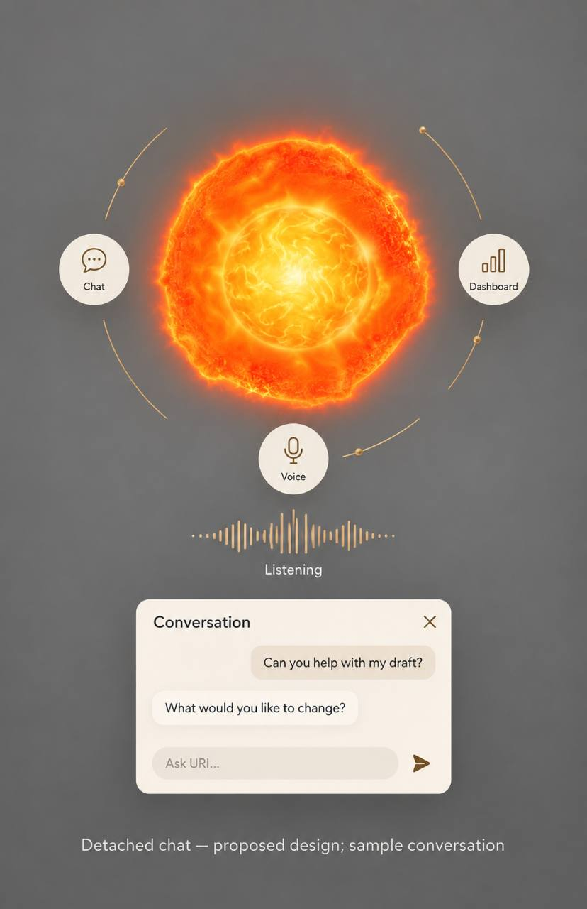
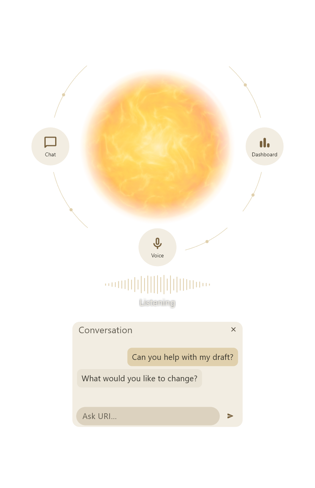

Interactive HTML proposal, not a new Flutter capture. Solar is a recorded frame of the existing renderer. Controls, sample messages and voice levels are simulated. The revised Flutter source awaits SDK/test access; previous engine captures remain tied to commit 15a322d1.
Move near the Companion to stop rotation. Voice is simulated; no microphone is opened.


Listening · simulated
Can you help with my draft?
What would you like to change?